Currently, the typical sidewalk garbage bin in the City of Toronto consists of three compartments:
(1) the waste, this is the garbage that is sent straight to landfill; (2) the organics, this section
is intended to be used as compost in parklands and gardens; and (3) the recycling section, this is
sent to the local Municipal Recovery Facility to be sorted into sub-groups such as metal,
plastic, and paper. The sorted materials are then processed and used to create other objects
of the same material.
The problem we found is that only 1/3 of recyclables actually get recycled. This is a $2 billion loss
in Canada and a $20 billion loss in the U.S. There are a few reasons for this. One of them is
food contamination, when oils and fats get soaked into the material it is no longer recyclable. The other reason is
that people just do not know where waste is supposed to go. Often packages are unlabelled or poorly labelled. Figuring out
where it is supposed to go also takes time, and if one is in a hurry, one will
often throw it into the garbage or the closest compartment.
The following table summarizes the results of the Ctrl-Z Waste/Recycling Survey conducted on January 7, 2016 in the Prep School Cafeteria. 21 subjects in the cafeteria line up were asked by team members to classify 7 items as to whether each should be treated as recycling, waste (i.e. landfill), hazardous, or compost. Results are as follows:
| Trash Item | Correct Classification | Incorrect Classification | Don't Know | Error Rate(%) |
|---|---|---|---|---|
| Paper Coffee Cup | 4 | 17 | 81.0 % | |
| Tissue | 8 | 12 | 1 | 61.9 % |
| Pens | 8 | 12 | 1 | 61.9 % |
| Candy Wrapper | 14 | 7 | 33.3 % | |
| Chip Bags | 15 | 5 | 1 | 28.6 % |
| Diapers | 11 | 8 | 2 | 47.6 % |
| Socks | 12 | 4 | 5 | 42.9 % |
| Total | 72 | 65 | 10 | 51.0 % |
As only half of the selected trash items were correctly classified by the subjects, the team concludes that a significant portion of the student body is unfamiliar with the appropriate classifcation of waste items. The Smart Sort Trash Bin may serve as an effective classification tool in an institutional environment, like a school.


Examples of existing solutions are seen below:
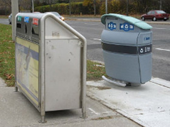
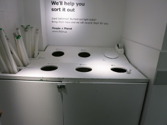
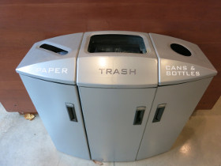
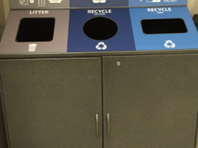
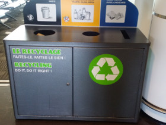
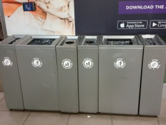
Our Smart Sort Trash Bin idea is better in that it guides the consumer to the correct
recepticle into which the waste should be deposited.
This causes the waste to be directed to the correct stream.
Ctrl-Z first went to IKEA to buy 5 small trash bins with hinged lids. Then we went to the Home Depot to buy foam insulation boards to create a box to house the samll IKEA trash bins.
 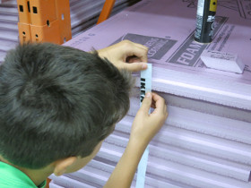
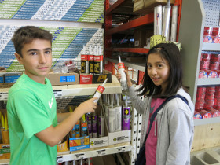
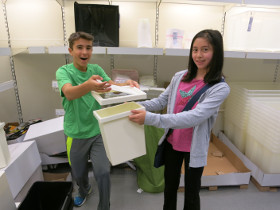
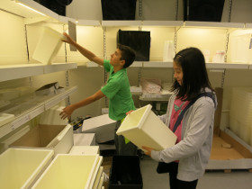
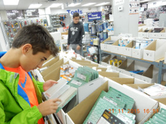
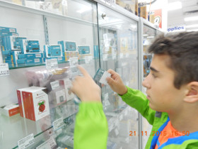
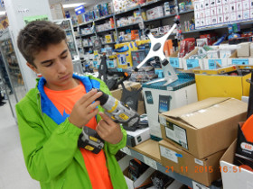
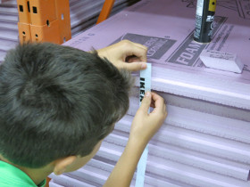
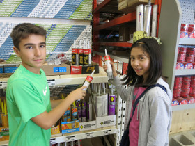
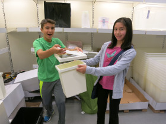
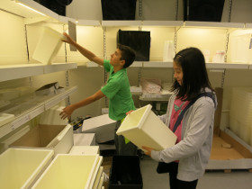
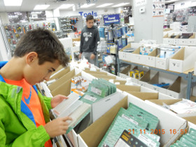
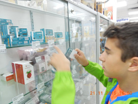
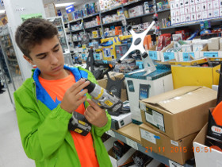
 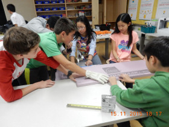
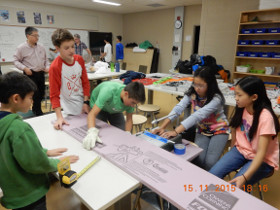
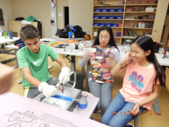
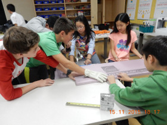
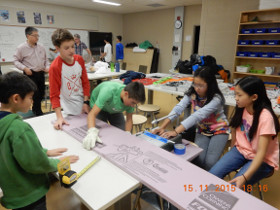
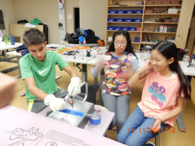
| Part | Price per Unit | Price per Bin | Resource |
|---|---|---|---|
|
Insulation Foam |
$17.30/piece | $34.60/Bin | https://www.homedepot.ca/en/home/p.1000100179.html |
|
Arduino Boards |
$27.75/Board | $27.75/Bin | https://www.creatroninc.com/product/arduino-uno-rev3/ |
|
Wires (13 feet) |
$0.18/foot | $2.34/Bin | https://www.creatroninc.com/product/22awg-solid-wire/?search_query=wire&results=454 |
|
Servo Motors (5) |
$14/Servo | $70/Bin | https://www.creatroninc.com/product/analog-feedback-servo-motor-16kgcm/ |
| Netbook Laptop | $145.00/computer | $145.00/Bin | http://www.walmart.com/ip/Nextbook-Flexx-11-with-WiFi-11.6-Touchscreen-Tablet-PC-Featuring-Windows-8.1-Operating-System-Black/44503406 |
|
Trash Bins |
$5.00/unit | $30.00/Bin | http://www.ikea.com/ca/en/catalog/products/20193899/#/40188340 | TOTAL: | $309.69/Bin |